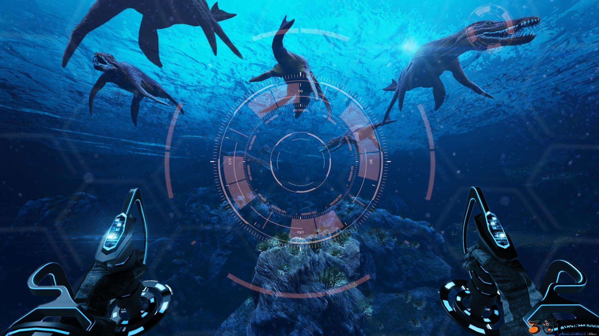
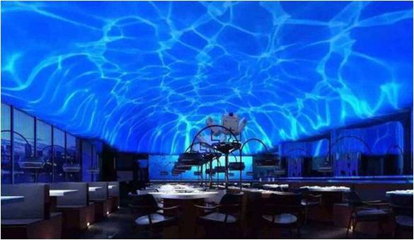
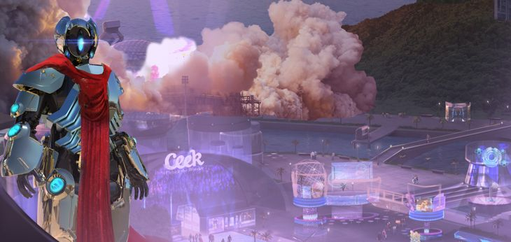
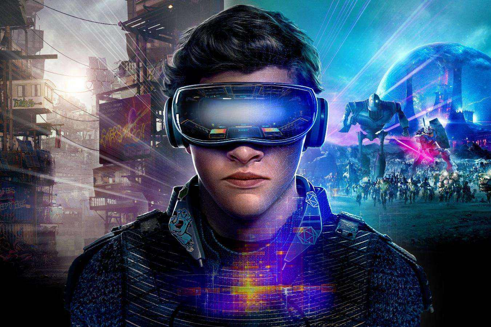

娱乐
 learn more医学
learn more室内设计
 learn more军事航天
 learn more文物复原
learn more游戏
 learn more丰富的感觉能力与3D显示环境使得VR成为理想的视频游戏工具。由于在娱乐方面对VR的真实感要求不是太高，故近些年来VR在该方面发展最为迅猛。如Chicago（芝加哥）开放了世界上第一台大型可供多人使用的VR娱乐系统，其主题是关于3025年的一场未来战争；英国开发的称为“Virtuality”的VR游戏系统，配有HMD，大大增强了真实感；1992年的一台称为“Legeal Qust”的系统由于增加了人工智能功能，使计算机具备了自学习功能，大大增强了趣味性及难度，使该系统获该年度VR产品奖。另外在家庭娱乐方面VR也显示出了很好的前景。 作为传输显示信息的媒体，VR在未来艺术领域方面所具有的潜在应用能力也不可低估。VR所具有的临场参与感与交互能力可以将静态的艺术（如油画、雕刻等）转化为动态的，可以使观赏者更好地欣赏作者的思想艺术。另外，VR提高了艺术表现能力，如一个虚拟的音乐家可以演奏各种各样的乐器，手足不便的人或远在外地的人可以在他生活的居室中去虚拟的音乐厅欣赏音乐会等等。 对艺术的潜在应用价值同样适用于教育，如在解释一些复杂的系统抽象的概念如量子物理等方面，VR是非常有力的工具，Lofin等人在1993年建立了一个“虚拟的物理实验室”，用于解释某些物理概念，如位置与速度，力量与位移等。
在过去至少20年里，虚拟现实仿真技术一直被用于治疗患有特殊疾病的病人，比如创伤后应激障碍（PTSD）、重度烧伤及恐惧症等。从1997年以后，虚拟现实技术就被用于患有PTSD的士兵。Bravemind是Virtually Better提供的一种虚拟现实疗法项目，可以帮助临床医生逐渐将患者暴露于刺激物下，诱发他们的创伤应急反应，从而帮助患者尽快康复。 美国南加州大学创新技术研究所（Institutefor Creative Technologies）正在开发多种原型产品，并且在多个医疗虚拟现实领域展开相关研究。HITLab和Firsthand Technology的亨特霍夫曼（Hunter Hoffman）曾在15年前开发了Snow World，这是一种早期的虚拟现实环境，可以帮助烧伤患者减轻治疗过程中的疼痛感。 虽然虚拟现实技术十分有效，但在痛觉管理领域还大有用武之地。Firsthand的几位创始人最近创建了一家名为Deep StreamVR的新公司，继续开发医疗保健虚拟现实应用。 对于医师们来说，他们可以轻松利用虚拟现实技术，在对恐惧症患者的治疗中提升暴露疗法或认知行为疗法的疗效。现如今，越来越多的公司正在开发暴露疗法，其中就包括虚拟现实医疗中心（Virtual Reality Medical Center）和Psious。有些公司还开发了供临床医生使用的专门应用，消除患者对飞行、扎针、爬高、封闭空间、公开讲话、驾驶等事情的恐惧。 针对临床医疗保健虚拟现实技术研发的其他领域还包括，管理假肢痛、脑损伤评估和康复、针对青年孤独症患者的社会认知训练、对焦虑症和抑郁症的治疗、中风康复、对儿童多动症（ADHD）、诊断学和成像可视化的管理等。
虚拟现实与室内设计的结合，将客户在室内装修中起到的作用进行重新定位，让其不仅仅是房屋的主人，更是设计的参与者。艺术与技术的结合，将会让二者在不同的领域的功能得到拓宽，在节约人力物力的同时也会提升整体的美感。 随着虚拟现实的发展，近两年推出了“混合现实”这一概念和技术，旨在让虚拟的环境与真实的环境进行结合，让体验者几乎分不清哪些是虚拟的场景，哪些是真实的场景，并且又可以根据自己的需求对虚拟场景进行改变和操作。如此，便让人们逐渐摆脱了厚重的虚拟设备且加深了虚拟现实原本的沉浸感。由此想到混合现实与室内设计的结合，将打破传统的设计模式，所见及所得的高效率，将会广泛受到设计师的青睐。
虚拟现实 虚拟现实就是现实的情况对于事物以及周边的环境进行详细的考察，针对于特殊的区域进行很好的记载描述，然后通过高科技的手段对于整个环境进行有效的模拟，这类虚拟的完成更多的借助于计算机软件系统，能够很好的对于各种的状态以及环境进行很好的描述，减少了因为人为引发的各种因素，对于现实展现的更加清晰。这类创造是我们计算机系统中固有的，如今很多的实验方面都起到了良好的效果，对于一些很难达到实验条件的工作能够提供器需要的条件，虚拟现实为我们如今的工作带来了很大的便利，也是未来我们发展的必然的趋势。 军事系统仿真 近几年国防事业的不断发展，更多的高端技术被融入到了今天的军事理论与军事实际的工作中，在我们组织练兵时，涉及方面很广。第一，如今科技战，实弹的训练要有很高的投入，近几年各国的经费都处于下调的时期，这样实战就变得非常的困难；第二，进行大规模的实战训练我们需要较大的场地，即使在戈壁沙漠也都会造成极大的影响，影响当地居民的正常生活和造成环境的污染。面对这样的形势，我们应该既要不影响到这两方面，与此同时又能够使得我们的部队达到良好的练兵效果，在这样的形势下我们进行改革创新研发虚拟仿真对抗，能够很好地融入高科技的手段，分析的过程也更加的合理准确，这类模拟系统更多的运用电脑软件系统来完成，通过对实战地具体情况进行分析很好地在系统中进行体现，更具实地的效果。
利用虚拟现实技术，结合网络技术，可以将文物的展示、保护提高到一个崭新的阶段。首先表现在将文物实体通过影像数据采集手段，建立起实物三维或模型数据库，保存文物原有的各项型式数据和空间关系等重要资源，实现濒危文物资源的科学、高精度和永久的保存。 其次利用这些技术来提高文物修复的精度和预先判断、选取将要采用的保护手段，同时可以缩短修复工期。 通过计算机网络来整合统一大范围内的文物资源，并且通过网络在大范围内来利用虚拟技术更加全面、生动、逼真地展示文物，从而使文物脱离地域限制，实现资源共享，真正成为全人类可以“拥有”的文化遗产。使用虚拟现实技术可以推动文博行业更快地进入信息时代，实现文物展示和保护的现代化。
3D游戏，所追求的是一种虚拟现实的实现，一直致力于为玩家带来最贱的感官体验。游戏的发展从最初的简单文字游戏，一步步到后来的大型网络3D游戏，都是为了能给用户带来更好的真实性与交互性，希望能达到如客观世界一般存在一个游戏的虚拟世界。3D游戏，即是三维游戏，3D游戏通过三维空间的原理，在游戏中运用了长、宽、高等三种度量，来达到游戏世界对客观世界的真实还原，相对于2D平面游戏，也更加的吸引人。场景就是游戏世界各种活动所发生的场所，在游戏中起着很重要的作用，对于3D游戏开发来说，目前适合虚拟现实技术的有：冒险类、动作类、赛车类和角色扮演类。传统的网络游戏技术，目的是仅仅是为了满足玩家的精神追求，更加注重游戏世界的设定，而忽视了玩家体验，将玩家拒之于显示器之外，玩家只能通过操作角色来体验游戏中的各种设定，游戏体验仅仅停留于键盘跟鼠标的操作，并不能真正达到一种真切的感官体验。随着网络游戏时代、技术的发展，人们更加倾向于去进行带有实际体验的虚拟现实3D游戏，虚拟现实类游戏，占据着更多的市场，这种大大提高了玩家体验，与传统的3D游戏完全是不一样的游戏，能让玩家在其中得到感官上满足。虚拟现实技术游戏模拟方面展现出它的优势，玩家通过一系列的可穿戴设备，与游戏中的角色合二为一，它可以模拟任何世界上客观存在的物质，也可以模拟人脑中抽象出来的精神物质，更加真实的体验到游戏中的角色就是自己，自己就是游戏中的角色。这也是传统模拟游戏与虚拟现实游戏之间存在的最大的差别。